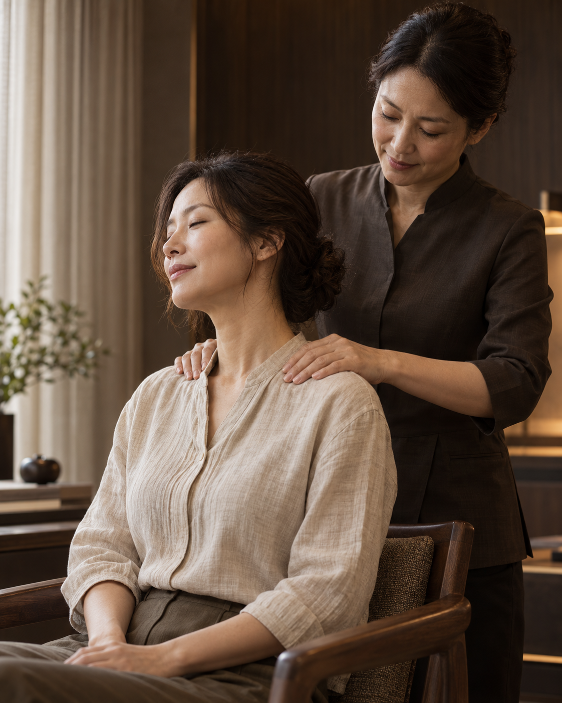
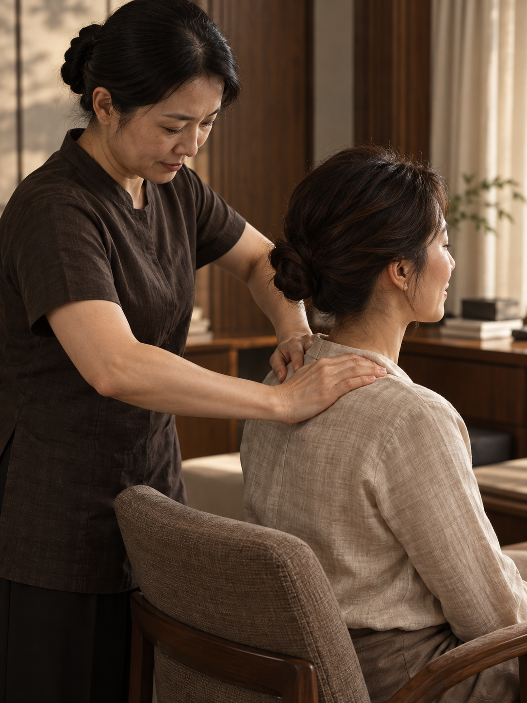
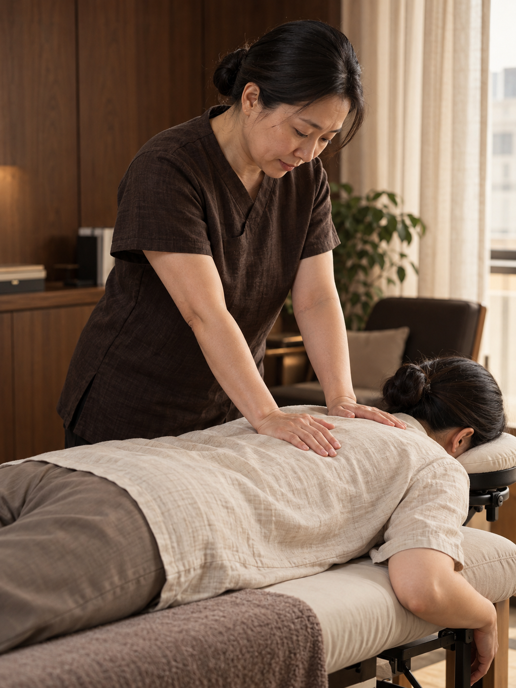
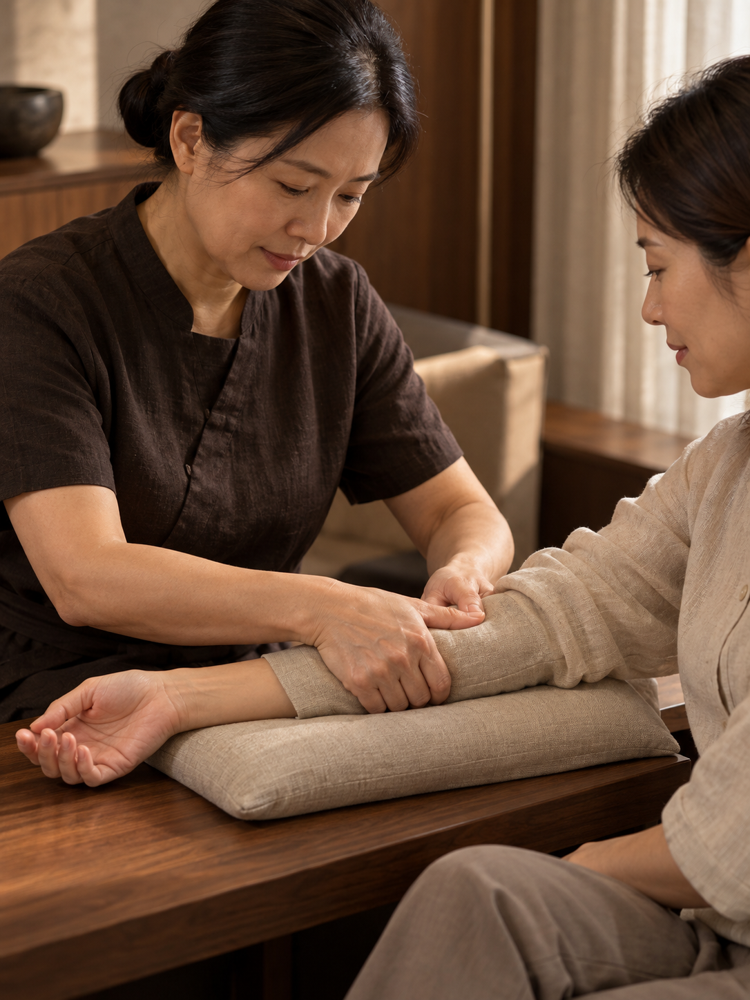
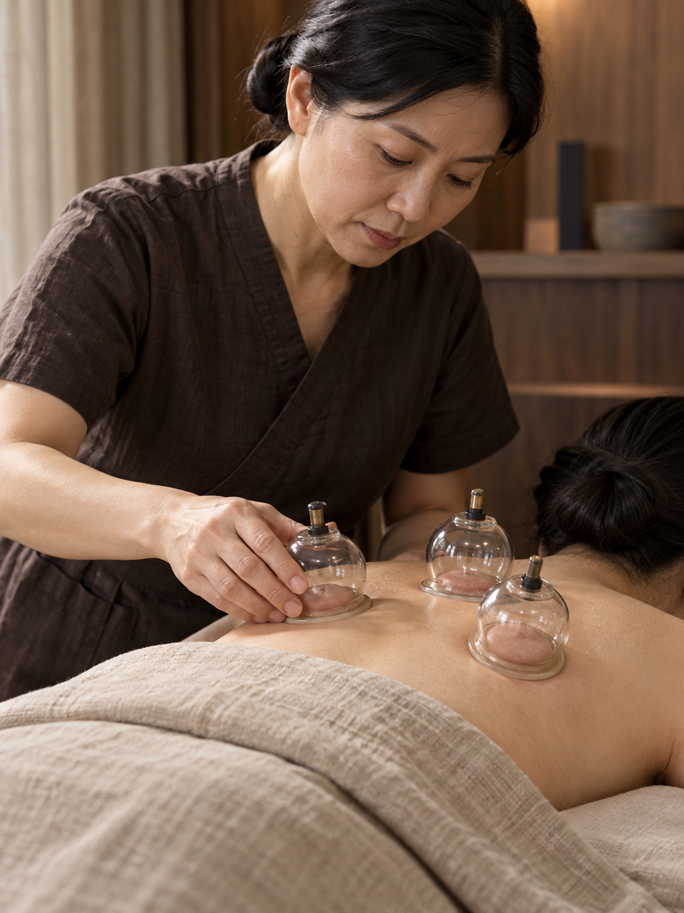

馥肌 TRADITIONAL BODY CARE
傳統整復推拿
舒緩日常緊繃
肩頸舒緩、背部放鬆、手臂舒展與拔罐，
依您的需求安排，力道隨時可以調整。
提供台中企業到府服務，
配合公司時段，安排員工推拿與放鬆。

肩頸到手臂，
依需求選擇服務。
久坐辦公、長時間使用電腦，
想放鬆的部位各有不同。
可單選或搭配，服務前再確認內容。

NECK & SHOULDERS
肩頸舒緩
長時間用電腦、低頭滑手機，肩頸容易緊繃。透過局部揉按，幫助肩頸放鬆。
了解肩頸舒緩
以肩頸周圍的揉按與推拿為主。開始前會先詢問想加強的部位與可接受的力道，過程中也能隨時調整。可安排坐姿服務，實際方式會先說明。

BACK RELAXATION
背部放鬆
久坐、久站或長時間維持同一姿勢，背部容易緊繃。以推按與揉按，放鬆背部肌肉。
了解背部放鬆
以掌部推按、揉按等方式放鬆背部。依個人需求及場地安排坐姿或趴姿；若需使用推拿床，會提前確認空間與設備。

ARM RELAXATION
手臂舒展
經常打字、使用滑鼠，或工作時反覆使用雙手，可透過手臂與前臂的局部揉按放鬆。
了解手臂舒展
以手臂及前臂的肌肉揉按為主，服務時會讓手臂有適當支撐。可單獨選擇，也能與肩頸舒緩搭配，實際內容與時間另行確認。

CUPPING
拔罐
以拔罐方式進行局部調理，依個人狀況與需求安排。服務前會先說明注意事項。
了解拔罐
拔罐部位需露出皮膚，因此會安排在有遮蔽的獨立空間。服務前先確認身體狀況，說明施作方式與可能留下的暫時性罐印，再確認是否適合、施作部位與時間。
THE FU JI APPROACH / 關於馥肌
依照個人需求，
調整手法與力道。
馥肌提供傳統整復推拿與拔罐服務。
從想放鬆的部位、身體狀況到力道偏好，
先了解您的需求，再安排適合的服務。
- 先了解需求，再開始服務
- 開始前先詢問平常的工作姿勢、緊繃部位與當天狀況，確認服務範圍及力道。
- 重視感受，也保護隱私
- 推拿原則上不需脫衣，拔罐則需露出局部皮膚並做好遮蔽。力道太重、想安靜休息或暫停，都可以直接告訴服務人員。
- 到公司服務，省去往返時間
- 配合公司的場地與作息安排時段，同仁不必另外出門，也能在工作空檔放鬆。
提供一般放鬆與民俗調理服務，不提供醫療診斷或治療。
企業員工福利
到府推拿服務
依參與人數、場地與預算，
安排單次體驗、定期服務或企業活動。
由同仁自願參加，選擇需要的項目。
員工福利、部門活動、首次試辦
20 分鐘／人為排程範例，實際時間另議
肩頸舒緩・背部放鬆・手臂舒展・拔罐
事前確認服務內容、場地、人員安排與費用
以上為方案規劃範例，可依公司需求調整。每人的服務不一定包含全部四項，實際內容、時間與服務人員會事前確認。
固定日期與時段
依公司作息安排固定服務時間，也可分部門輪流參加。
同仁自由選擇
由同仁自願參加，依當天需求選擇項目，不需每次都做相同服務。
依使用情況調整
參考實際參加人數與匿名意見，調整後續的服務內容、時段及名額。
頻率、名額、費用、改期與取消條件於合作前確認。此為企業合作提案，尚未開放個人會員訂閱。
企業合作需求
先從這裡填寫
選擇服務項目，填入預估人數、
服務時間與場地狀況，
即可產生一份方便討論的需求單。
服務地區台中市｜交通與實際地點另行確認
空間安排推拿需安靜、方便進出的空間；拔罐另需可遮蔽的獨立區域
費用確認依項目、人數、服務時數、交通與設備需求報價
目前為網站提案，正式聯絡方式尚待提供。填寫後可複製或下載需求單，不會自動送出或完成預約。
YOUR FU JI BRIEF
馥肌合作需求單
依填寫條件初步估算
內容尚未送出，不代表預約、報價或會員申請。
BEFORE YOUR VISIT
服務前，
您可能想了解
服務項目可以自由搭配嗎？
可以先選擇想了解的項目，再依個人需求、時間與場地確認搭配方式。不需要一次做完四項，實際內容會在服務前說明。
推拿需要脫衣服嗎？拔罐呢？
肩頸、背部與手臂推拿原則上不需脫衣，建議穿著寬鬆、方便活動的衣物。拔罐需露出施作部位，會先說明範圍並做好遮蔽，經本人同意後再進行。
拔罐需要先了解什麼？
拔罐可能留下暫時性罐印，並非每個人都適合。服務前應由服務人員說明並確認個人狀況；有皮膚問題、不適或需要醫療判斷的情況，先尋求合適的醫療協助。網站圖片僅為情境示意。
公司需要準備什麼樣的場地？
需有安靜、通風與動線安全的空間，再依坐姿或推拿床安排確認尺寸。拔罐另需可遮蔽、避免他人觀看的區域。實際設備、進出場、停車與清潔安排會在合作前一起確認。
服務時間與費用如何決定？
先確認服務項目與組合，再依參與人數、每人預留時間、人員配置、交通及設備討論完整費用。本頁尚未提供固定價目；需求單的時段是排程條件，不保證能完成所有選定項目。
定期服務需要加入會員嗎？
目前規劃的是企業定期到場合作，尚未開放個人會員訂閱。頻率、每次名額、費用、改期與取消條件，會在正式合作前確認，不會因填寫需求單產生扣款或自動續約。
力道太重或不舒服，可以暫停嗎？
可以，請直接告訴服務人員，隨時都能調整力道或停止。若希望安靜休息，也可以事先提出。給公司的服務回饋以參加人數與匿名意見為主，不提供個人的身體狀況。
產生需求單後，會有人聯絡我嗎？
不會自動聯絡。此頁目前是品牌與服務網站提案，需求單只在瀏覽器產生，可複製或下載，沒有傳送功能。正式洽談窗口、檔期與營運資訊尚待補齊。